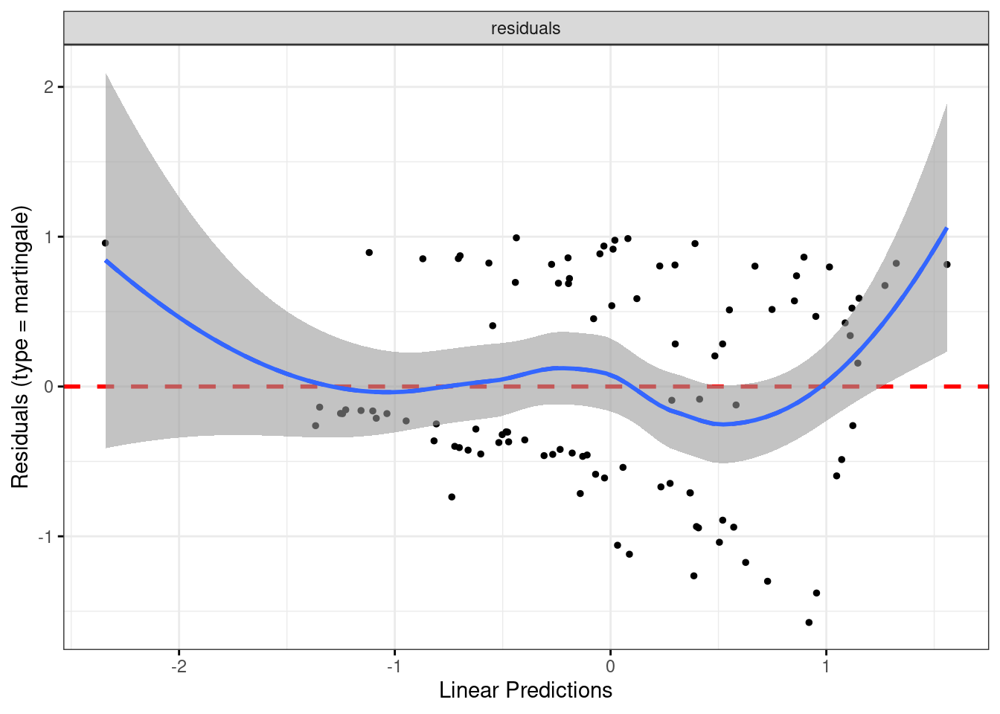

Chapter 27 Survival analysis
27.1 The Worcester survey
The Worcester survey was a long-term study of all myocardial-infarction Heart attack. victims admitted to hospitals in the Worcester, Massachusetts area. Worcester is pronounced, by locals, Woo-stuh. The data have been well studied, and can be found in the file link.
- Read the data and display the first few rows of the data frame. You might get an extra column, which you can ignore. For your information, the variables are:
patient ID code
admission date
date of last followup (this is the date of death if the patient died)
length of hospital stay (days)
followup time (days) (time between admission and last followup)
followup status: 1=dead, 0=alive
Age in years (at admission)
gender (0=male, 1=female)
body mass index (kg/m\(^2\))
Create a suitable response variable for a Cox proportional hazards model for time of survival, using the followup time and followup status.
Fit a Cox proportional hazards model predicting survival time from age, gender and BMI. Obtain the
summary(but you don’t need to comment on it yet).Test the overall fit of the model. What does the result mean?
Can any of your explanatory variables be removed from the model? Explain briefly.
Remove your most non-significant explanatory variable from the model and fit again. Take a look at the results. Are all your remaining explanatory variables significant? (If all your explanatory variables were previously significant, you can skip this part.)
Calculate the 1st quartile, median, and 3rd quartiles of age and BMI. (
quantile.) Round these off to the nearest whole number. (Do the rounding off yourself, though R has a functionroundthat does this, which you can investigate if you want.) As an alternative, you can get these by passing the whole data frame, or the columns of it you want, intosummary.Make a data frame out of all the combinations of age and BMI values (that you obtained in the previous part) suitable for predicting with.
Obtain predicted survival probabilities for each of the values in your new data frame. Use your best model. (You don’t need to look at the results, though you can if you want to.)
Make a graph depicting the survival curves from
survfitwith different colours distinguishing the different survival curves.What is the effect of age on survival? What is the effect of BMI on survival? Explain briefly. (You will have to disentangle the meaning of the different coloured lines on the plot to do this.)
27.2 Drug treatment programs
One of the goals of drug treatment programs is to lengthen the time until the patient returns to using drugs. (It is not generally possible to prevent patients from ever using drugs again.) In one study, over 600 former drug users took part. Two different programs, a short program and a long program, were offered at two different sites, labelled A and B. The data can be found in link. The variables are these:
ID: patient ID numberage: patient age at enrollment into the studyndrugtx: number of previous drug treatmentstreat: 0 for short treatment program, 1 for long programsite: 0 for site A, 1 for site Btime: time until return to drug usecensor: whether the subject returned to drug use (1) or not (0) during the follow-up periodherco: whether subject used heroine or cocaine in the last 3 months: 1 is both, 2 is one (either heroine or cocaine), 3 is neither.
Read in the data and check in one way or another that you have what was promised above.
There are some missing values in the dataframe. Demonstrate this using
summary. Pipe the dataframe intodrop_naand show that they have gone. (drop_naremoves all rows that have missing values in them.)Some of these variables are recorded as numbers but are actually categorical. Which ones? Re-define these variables in your data frame so that they have sensible (text) values.
Create a suitable reponse variable for a Cox proportional hazards regression that predicts time until return to drug use from the other variables. This requires some care, because you need to be sure about what the censoring variable actually represents and what you need it to represent.
Look at the first few values of your response variable. Why is the fifth one marked with a
+? Explain briefly.Fit a Cox proportional hazards model, predicting from all the other variables (except for
rowandID) that you haven’t used yet. Display the results.Find which explanatory variables can be removed at \(\alpha=0.05\) (there should be two of them). Bear in mind that we have categorical variables, so that looking at the output from
summaryis not enough.Remove all the non-significant explanatory variables and re-fit your model. By carrying out a suitable test demonstrate that your smaller model is the better one.
* Display your better model. Are all of the explanatory variables significant? Do their slope coefficients have sensible signs (plus or minus), based on what you know or can guess about drug treatments? Explain briefly.
We have three variables left in our model,
age,ndrugtxandtreat. The quartiles of age are 27 and 37, the quartiles ofndrugtxare 1 and 6, and the two possible values oftreatareshortandlong. Create a data frame with variables of these names and all possible combinations of their values (so there should be 8 rows in the resulting data frame). Display the resulting data frame.Obtain predicted survival probabilities for each of the values of
age,ndrugtxandtreatused in the previous part. You don’t need to display it (we are going to plot it shortly).Plot your predicted survival curves.
Which of your combinations of values is predicted to take the longest to return to drug use? Which is predicted to take the shortest time? Explain briefly.
Are your survival curve plot and your conclusions from part (here) consistent, or not? Explain briefly.
27.3 Multiple myeloma
Multiple myeloma is a kind of cancer. It forms in a plasma cell (which is a type of white blood cell). It causes cancer cells to accumulate in the bone marrow, where they crowd out healthy blood cells. Plasma cells make antibodies (to help fight infections), while the cancer cells don’t: they produce abnormal proteins that can cause kidney problems. (This adapted from link.) The variables are:
time: survival time from diagnosis (months)vstatus: 0=alive, 1=dead at end of studylogbun: log of BUN test score (BUN test is a test of kidney function, not to be confused with cha siu bao Barbecued pork in a bun. A staple of Chinese dim sum and Chinese bakeries, such as Ding Dong bakery on Spadina.).hgb: hemoglobin (at diagnosis).platelet: platelets: 1=normal, 0=abnormal (at diagnosis).ageat diagnosis, in yearslogwbc: log of WBC (white blood cell count, at diagnosis)frac: fractures at diagnosis (0=absent, 1=present)logpbm: log of percent of plasma cells in bone marrowprotein: proteinuria (protein in urine) at diagnosis. Most people have very little, so a larger than normal amount indicates illness of some kind.scalc: serum calcium at diagnosis.
The data, on 65 patients with multiple myeloma, are in link. Some of the variables are logs because they could take very large values.
There are a lot of parts here, but each part is supposed to be short.
Read in the data and display (some of) the values. Confirm that you have the right number of observations and the right variables.
Create a suitable response variable for a Cox proportional-hazards survival model, bearing in mind that the “event” here is death. Display your response variable, and explain briefly what the
+signs attached to some of the values mean, without using a technical term.What is the technical term for those patients that have a
+by their values for the response variable?Fit a Cox proportional-hazards survival model predicting your response variable from all the other variables (except for the ones that you used to make the response variable). Display the
summaryof your model.In your model, which explanatory variables have a P-value less than 0.10? Fit a model containing only those and display the results.
Do a test to compare the two models that you fit. Why do you prefer the second model? Explain briefly.
There should be two explanatory variables left in your model. These are both numerical variables. Find their first and third quartiles, any way you like.
Create a data frame containing all possible combinations of the two quartiles for each of the two variables, and display the result.
Obtain predicted survival probabilities for each of the combinations of variables you created above. You don’t need to look at the results (they are rather long).
Obtain a graph of the predicted survival curves for each combination of your variables.
Is it better to have high or low values for each of the variables in your prediction? Explain briefly.
27.4 Ovarian cancer
R’s survival package contains several data
sets. One of these is called ovarian; it comes from a study
of 26 ovarian cancer patients. The major purpose of this study was to
compare the effects of two treatments on survival time.
Obtain and display (all of) the data set. This is as simple as loading the package and typing the data set’s name.
The columns of interest to us are:
futime: the time for which a patient was followed-up: the number of days until either they died or the study ended (or they withdrew from the study for some other reason).fustat: follow-up status: 1 if the patient died of ovarian cancer, 0 if they were still alive when the study ended.age: of patient, at diagnosis, in yearsrx: treatment, numbered 1 or 2, but really labels for the two treatments.
Create and display a suitable response variable y for a Cox
proportional-hazards model.
In the display of your response variable, some values are marked with a
+. Why is that? Explain briefly. (If you use a technical term, you should explain what it means.)Fit a Cox proportional-hazards model for predicting survival time from age and treatment. Note that the numeric values for treatment make sense only as labels for the two treatments, so in your model formula make treatment into a factor. Display the results.
Is there a significant difference between the treatments in terms of their effects on survival (from ovarian cancer)?
Is there a significant effect of age? If there is, describe the effect that age has on survival.
Make a martingale residual plot for this model. Do you see any problems? Explain briefly.
Find the quartiles of
age, and make a data frame containing all combinations of those two ages and the two treatments. Display what you have. (Feel free to copy the values by hand, rather than trying to save them and use them.)Obtain predicted survival probabilities for each of your age-treatment combinations, for each of a variety of survival times. (This is only one thing, despite it sounding like a lot.)
Draw a plot that compares the survival probabilities at the different times.
According to your plot, how would you describe the effects of treatment and of age?
My solutions follow:
27.5 The Worcester survey
The Worcester survey was a long-term study of all myocardial-infarction Heart attack. victims admitted to hospitals in the Worcester, Massachusetts area. Worcester is pronounced, by locals, Woo-stuh. The data have been well studied, and can be found in the file link.
- Read the data and display the first few rows of the data frame. You might get an extra column, which you can ignore. For your information, the variables are:
patient ID code
admission date
date of last followup (this is the date of death if the patient died)
length of hospital stay (days)
followup time (days) (time between admission and last followup)
followup status: 1=dead, 0=alive
Age in years (at admission)
gender (0=male, 1=female)
body mass index (kg/m\(^2\))
Solution
my_url <- "https://raw.githubusercontent.com/nxskok/datafiles/master/whas100.csv"
whas100 <- read_csv(my_url)## Warning: Missing column names filled in: 'X1' [1]##
## ── Column specification ──────────────────────────────────────────────────────────────────────────────────────────────────────────────────────────────────────────────────────────────────────
## cols(
## X1 = col_double(),
## id = col_double(),
## admitdate = col_character(),
## foldate = col_character(),
## los = col_double(),
## lenfol = col_double(),
## fstat = col_double(),
## age = col_double(),
## gender = col_double(),
## bmi = col_double()
## )I seem to have an extra column called X1. This is because I
saved my version of the data using the old write.csv, which
comes with row names, and I forgot to
get rid of them. These came back as an extra unnamed variable to which
read_delim gave the name X1.
\(\blacksquare\)
- Create a suitable response variable for a Cox proportional hazards model for time of survival, using the followup time and followup status.
Solution
Surv. The event here is death, so the two parts of the
response variable are followup time lenfol and followup
status, 1 being “dead”, fstat:
## [1] 6 374 2421 98 1205 2065 1002 2201 189 2719+ 2638+ 492 302 2574+
## [15] 2610+ 2641+ 1669 2624 2578+ 2595+ 123 2613+ 774 2012 2573+ 1874 2631+ 1907
## [29] 538 104 6 1401 2710 841 148 2137+ 2190+ 2173+ 461 2114+ 2157+ 2054+
## [43] 2124+ 2137+ 2031 2003+ 2074+ 274 1984+ 1993+ 1939+ 1172 89 128 1939+ 14
## [57] 1011 1497 1929+ 2084+ 107 451 2183+ 1876+ 936 363 1048 1889+ 2072+ 1879+
## [71] 1870+ 1859+ 2052+ 1846+ 2061+ 1912+ 1836+ 114 1557 1278 1836+ 1916+ 1934+ 1923+
## [85] 44 1922+ 274 1860+ 1806 2145+ 182 2013+ 2174+ 1624 187 1883+ 1577 62
## [99] 1969+ 1054Just using fstat alone as the second thing in Surv
also works, because anything that gives TRUE or 1 when the
event (death) occurs is equally good. (In R, TRUE as a number
is 1 and FALSE as a number is 0.)
I listed the values by way of checking. The ones with a + are
censored: that is, the patient was still alive the last time the
doctor saw them. Most of the censored values are longer times. Usually
this happens because the patient was still alive at the end of the study.
\(\blacksquare\)
- Fit a Cox proportional hazards model predicting survival time
from age, gender and BMI. Obtain the
summary(but you don’t need to comment on it yet).
Solution
This, using the response variable that we just created:
## Call:
## coxph(formula = y ~ age + gender + bmi, data = whas100)
##
## n= 100, number of events= 51
##
## coef exp(coef) se(coef) z Pr(>|z|)
## age 0.03713 1.03783 0.01272 2.918 0.00352 **
## gender 0.14325 1.15402 0.30604 0.468 0.63973
## bmi -0.07083 0.93162 0.03607 -1.964 0.04956 *
## ---
## Signif. codes: 0 '***' 0.001 '**' 0.01 '*' 0.05 '.' 0.1 ' ' 1
##
## exp(coef) exp(-coef) lower .95 upper .95
## age 1.0378 0.9636 1.0123 1.0640
## gender 1.1540 0.8665 0.6334 2.1024
## bmi 0.9316 1.0734 0.8680 0.9999
##
## Concordance= 0.683 (se = 0.037 )
## Likelihood ratio test= 21.54 on 3 df, p=8e-05
## Wald test = 19.46 on 3 df, p=2e-04
## Score (logrank) test = 20.82 on 3 df, p=1e-04\(\blacksquare\)
- Test the overall fit of the model. What does the result mean?
Solution
Look at those three P-values at the bottom. They are all small, so something in the model is helping to predict survival. As to what? Well, that’s the next part.
\(\blacksquare\)
- Can any of your explanatory variables be removed from the model? Explain briefly.
Solution
gender has a (very) large P-value, so that can be taken
out of the model. The other two variables have small P-values
(bmi only just under 0.05), so they need to stay.
The other way to think about this is step, or drop1:
This is here equivalent to
Not exactly the same as that output, because it is doing a test that would be the same if you had an infinitely large sample, but is slightly different with an ordinary finite number of observations. the output
from summary, but where it
scores is if you have a categorical explanatory variable like
“treatment” with more than two levels: drop1 will tell you
about keeping or dropping it as a whole.
Our categorical variable gender has only two levels.
If you prefer:
## Call:
## coxph(formula = y ~ age + bmi, data = whas100)
##
## coef exp(coef) se(coef) z p
## age 0.03927 1.04005 0.01187 3.309 0.000938
## bmi -0.07116 0.93131 0.03614 -1.969 0.048952
##
## Likelihood ratio test=21.32 on 2 df, p=2.346e-05
## n= 100, number of events= 51gender comes out, but the others stay. As usual, put
trace=1 or trace=2 to get more output, which will
look like a sequence of drop1’s one after the other.
\(\blacksquare\)
- Remove your most non-significant explanatory variable from the model and fit again. Take a look at the results. Are all your remaining explanatory variables significant? (If all your explanatory variables were previously significant, you can skip this part.)
Solution
So, take out gender:
## Call:
## coxph(formula = y ~ age + bmi, data = whas100)
##
## n= 100, number of events= 51
##
## coef exp(coef) se(coef) z Pr(>|z|)
## age 0.03927 1.04005 0.01187 3.309 0.000938 ***
## bmi -0.07116 0.93131 0.03614 -1.969 0.048952 *
## ---
## Signif. codes: 0 '***' 0.001 '**' 0.01 '*' 0.05 '.' 0.1 ' ' 1
##
## exp(coef) exp(-coef) lower .95 upper .95
## age 1.0401 0.9615 1.0161 1.0645
## bmi 0.9313 1.0738 0.8676 0.9997
##
## Concordance= 0.681 (se = 0.037 )
## Likelihood ratio test= 21.32 on 2 df, p=2e-05
## Wald test = 19 on 2 df, p=7e-05
## Score (logrank) test = 19.99 on 2 df, p=5e-05Both explanatory variables are significant: age definitely,
bmi only just. This is the same model as step gave me.
\(\blacksquare\)
- Calculate the 1st quartile, median, and 3rd quartiles of
age and BMI. (
quantile.) Round these off to the nearest whole number. (Do the rounding off yourself, though R has a functionroundthat does this, which you can investigate if you want.) As an alternative, you can get these by passing the whole data frame, or the columns of it you want, intosummary.
Solution
## 0% 25% 50% 75% 100%
## 32.00 59.75 71.00 80.25 92.00## 0% 25% 50% 75% 100%
## 14.91878 23.53717 27.19158 30.34770 39.93835or
## age bmi
## Min. :32.00 Min. :14.92
## 1st Qu.:59.75 1st Qu.:23.54
## Median :71.00 Median :27.19
## Mean :68.25 Mean :27.04
## 3rd Qu.:80.25 3rd Qu.:30.35
## Max. :92.00 Max. :39.94Or, pure tidyverse: use summarize_all, which summarizes all the columns (after you’ve done the select).
## Warning: `cols` is now required when using unnest().
## Please use `cols = c(age, bmi)`The reason for the list() and the unnest() is that
quantile returns five numbers rather than just one, so it has
to go into the output data frame as a list-column, which then gets
broken apart with unnest so that you can see it. Try it
without the unnest() line to see what happens if you don’t do
that.
Using whichever of this multitude of ways appeals to you:
60, 71 and 80 for age, 24, 27 and 30 for BMI.
\(\blacksquare\)
- Make a data frame out of all the combinations of age and BMI values (that you obtained in the previous part) suitable for predicting with.
Solution
The inevitable crossing. This is probably quickest:
Or, with some setup beforehand to make the crossing
clearer. This is my no-think approach, which is what I recommend;
vectors with plural names containing the values, and inside the
crossing, a singular name equals a plural one:
ages <- c(60, 71, 80)
bmis <- c(24, 27, 30)
whas100.new <- crossing(age = ages, bmi = bmis)
whas100.new\(\blacksquare\)
- Obtain predicted survival probabilities for each of the values in your new data frame. Use your best model. (You don’t need to look at the results, though you can if you want to.)
Solution
The magic word is survfit (which plays the role of
predict here). The best model is whas100.2,
with the non-significant gender removed:
This doesn’t need the data= at the end (it works perfectly
well without), but the plot (later) seems to need it to be there. I
think the plot needs the information from the original data to be in
the predictions somewhere.
This is kind of long to look at (summary(pp2) would be the
thing), so we will need to make a graph of it. I gave it a name, since
I want to use it again later.
\(\blacksquare\)
- Make a graph depicting the survival curves from
survfitwith different colours distinguishing the different survival curves.
Solution
This is actually easy once you work out what to do:
Without the conf.int thing, you get confidence intervals for
each survival curve, which overlap each other and generally make the
plot look messy.
The “strata” are the different age-BMI combinations that you predicted for, so it’s usually a good idea to list the “new” prediction data frame, either here or when you assess the effects of the variables (next part) so that you can see which is which:
\(\blacksquare\)
- What is the effect of age on survival? What is the effect of BMI on survival? Explain briefly. (You will have to disentangle the meaning of the different coloured lines on the plot to do this.)
Solution
Bear in mind that up-and-to-the-right is best for a survival curve, since that means that people in the upper-right group have a higher chance of surviving for longer.
The best survival curve is therefore the olive-green one. According
to the legend, this goes with stratum 3, which is (according to
the listing of whas100.new) age 60 (the youngest) and BMI
30 (the highest). So it looks as if the best survival goes with a
lower age (not surprising) and a higher BMI (surprising; see
discussion about BMI below).
You can also leave one variable constant and see the effects of changing the other one. Let’s pick the oldest age 80: the BMI values are 24 (stratum 7, blue), 27 (stratum 8, purple), 30 (stratum 9, pink). These survival curves are the bottom one, the second bottom one, and the fourth bottom one. At this age, survival chances are not great, but having a higher BMI goes with a greater chance of surviving longer.
Or pick a BMI, say 30. These are strata 3 (olive green), 6 (light blue) and 9 (pink) respectively for ages 60, 71 and 80. These are the best, 3rd best and 5th best survival curves; that is, as age increases, the chance of surviving a long time decreases.
The effect of BMI, though, seems backwards: a higher BMI is associated with a higher chance of survival.
That’s the end of what I wanted you to do, but:
A higher BMI is usually associated with being obese (and therefore unhealthy), so you’d expect the effect of BMI to be the other way around. According to Wikipedia (link), the BMI values here are “overweight” or close to it. Maybe being heavier helps the body recover from a heart attack.
Let’s start with the martingale residual plot:
## `geom_smooth()` using formula 'y ~ x'## `geom_smooth()` using method = 'loess' and formula 'y ~ x'
There is a suspicion of bendiness here, though the left side of the curve is entirely because of that one positive residual on the left. In any case, this suggests that nonlinearity (evidently in terms of BMI, since that’s the relationship that currently makes no sense) would be worth exploring.
Thus:
## Call:
## coxph(formula = y ~ age + bmi + I(bmi^2), data = whas100)
##
## n= 100, number of events= 51
##
## coef exp(coef) se(coef) z Pr(>|z|)
## age 0.040542 1.041375 0.012035 3.369 0.000755 ***
## bmi -0.848949 0.427864 0.231562 -3.666 0.000246 ***
## I(bmi^2) 0.014500 1.014606 0.004227 3.430 0.000603 ***
## ---
## Signif. codes: 0 '***' 0.001 '**' 0.01 '*' 0.05 '.' 0.1 ' ' 1
##
## exp(coef) exp(-coef) lower .95 upper .95
## age 1.0414 0.9603 1.0171 1.0662
## bmi 0.4279 2.3372 0.2718 0.6736
## I(bmi^2) 1.0146 0.9856 1.0062 1.0230
##
## Concordance= 0.693 (se = 0.04 )
## Likelihood ratio test= 30.71 on 3 df, p=1e-06
## Wald test = 32.56 on 3 df, p=4e-07
## Score (logrank) test = 36.57 on 3 df, p=6e-08Ah, that seems to be it. The significant positive coefficient on
bmi-squared
means that the “hazard of dying” increases faster with increasing
bmi, so there ought to be an optimal BMI beyond which
survival chances decrease again.
Have we improved the residuals by adding the squared term?
## `geom_smooth()` using formula 'y ~ x'## `geom_smooth()` using method = 'loess' and formula 'y ~ x'
I call those “inconsequential wiggles” now, so I think we are good. Let’s explore the quadratic relationship on a graph.
I’m going to focus on a close-to-median age of 70, since, in this model, the effect of BMI is the same for all ages (to make it different, we would need an interaction term, ANOVA-style).
First we create a data frame with a bunch of different BMIs in, and one age 70:
It is rather absurd to have a plural ages with only one age
in it, but that’s the way it goes, if you’re me and trying to avoid thinking.
Predictions, using the model with the squared term in it:
And then the plot:

and the customary reminder of which stratum is which, with its rather ungainly name:
This time, the green survival curve is best, stratum 3, which means that survival is best at BMI 28, and worse for both higher BMIs and lower BMIs. You can follow the sequence of colours: red, olive-green, green, blue, pink, that goes up and then down again. But it’s still true that having a very low BMI is worst, which is why our (linear) model said that having a higher BMI was better.
It would have been better to have you put a squared term in the model, but the question was already long and complicated enough, and I didn’t want to make your lives more of a nightmare than they are already becoming!
\(\blacksquare\)
27.6 Drug treatment programs
One of the goals of drug treatment programs is to lengthen the time until the patient returns to using drugs. (It is not generally possible to prevent patients from ever using drugs again.) In one study, over 600 former drug users took part. Two different programs, a short program and a long program, were offered at two different sites, labelled A and B. The data can be found in link. The variables are these:
ID: patient ID numberage: patient age at enrollment into the studyndrugtx: number of previous drug treatmentstreat: 0 for short treatment program, 1 for long programsite: 0 for site A, 1 for site Btime: time until return to drug usecensor: whether the subject returned to drug use (1) or not (0) during the follow-up periodherco: whether subject used heroine or cocaine in the last 3 months: 1 is both, 2 is one (either heroine or cocaine), 3 is neither.
- Read in the data and check in one way or another that you have what was promised above.
Solution
This:
##
## ── Column specification ──────────────────────────────────────────────────────────────────────────────────────────────────────────────────────────────────────────────────────────────────────
## cols(
## row = col_double(),
## ID = col_double(),
## age = col_double(),
## ndrugtx = col_double(),
## treat = col_double(),
## site = col_double(),
## time = col_double(),
## censor = col_double(),
## herco = col_double()
## )This shows that you have over 600 rows and the variables described.
\(\blacksquare\)
- There are some missing values in the dataframe. Demonstrate
this using
summary. Pipe the dataframe intodrop_naand show that they have gone. (drop_naremoves all rows that have missing values in them.)
Solution
First off, summary is a quick way to show how many missing
values there are:
It doesn’t work with text columns, but it does work if you temporarily turn the text columns into factors, eg. by using mutate-if. However, we don’t have any text columns here, so what we do here is good for this data set.
## row ID age ndrugtx treat
## Min. : 1.0 Min. : 1.0 Min. :20.00 Min. : 0.000 Min. :0.0000
## 1st Qu.:157.8 1st Qu.:157.8 1st Qu.:27.00 1st Qu.: 1.000 1st Qu.:0.0000
## Median :314.5 Median :314.5 Median :32.00 Median : 3.000 Median :0.0000
## Mean :314.5 Mean :314.5 Mean :32.37 Mean : 4.574 Mean :0.4904
## 3rd Qu.:471.2 3rd Qu.:471.2 3rd Qu.:37.00 3rd Qu.: 6.000 3rd Qu.:1.0000
## Max. :628.0 Max. :628.0 Max. :56.00 Max. :40.000 Max. :1.0000
## NA's :5 NA's :17
## site time censor herco
## Min. :0.000 Min. : 2.0 Min. :0.0000 Min. :1.000
## 1st Qu.:0.000 1st Qu.: 79.0 1st Qu.:1.0000 1st Qu.:1.000
## Median :0.000 Median : 166.0 Median :1.0000 Median :2.000
## Mean :0.293 Mean : 234.7 Mean :0.8089 Mean :1.898
## 3rd Qu.:1.000 3rd Qu.: 365.2 3rd Qu.:1.0000 3rd Qu.:3.000
## Max. :1.000 Max. :1172.0 Max. :1.0000 Max. :3.000
## Age has five missing values and “number of previous drug treatments” has seventeen.
Following the instructions, and saving back into the original dataframe:
and then
## row ID age ndrugtx treat
## Min. : 1.0 Min. : 1.0 Min. :20.00 Min. : 0.000 Min. :0.0000
## 1st Qu.:155.2 1st Qu.:155.2 1st Qu.:27.00 1st Qu.: 1.000 1st Qu.:0.0000
## Median :312.5 Median :312.5 Median :32.00 Median : 3.000 Median :0.0000
## Mean :313.8 Mean :313.8 Mean :32.39 Mean : 4.579 Mean :0.4918
## 3rd Qu.:473.8 3rd Qu.:473.8 3rd Qu.:37.00 3rd Qu.: 6.000 3rd Qu.:1.0000
## Max. :628.0 Max. :628.0 Max. :56.00 Max. :40.000 Max. :1.0000
## site time censor herco
## Min. :0.0000 Min. : 2.0 Min. :0.0000 Min. :1.00
## 1st Qu.:0.0000 1st Qu.: 79.0 1st Qu.:1.0000 1st Qu.:1.00
## Median :0.0000 Median : 166.0 Median :1.0000 Median :2.00
## Mean :0.2984 Mean : 234.4 Mean :0.8115 Mean :1.89
## 3rd Qu.:1.0000 3rd Qu.: 361.8 3rd Qu.:1.0000 3rd Qu.:3.00
## Max. :1.0000 Max. :1172.0 Max. :1.0000 Max. :3.00No NA left. Gosh, as they say, that was easy. Extra: how many rows did we lose?
## [1] 610There were 628 rows before, so we lost 18. (There were 22 missing values, but some of them were two on one row, so we only lost 18 rows.)
This is a very unsophisticated way of dealing with missing values. Another way is to “impute” them, that is, to guess what they would have been, and then fill in the guessed values and use them as if they were the truth, for example by regressing the columns with missing values on all the others, and using the regression predictions in place of the missing values.
\(\blacksquare\)
- Some of these variables are recorded as numbers but are actually categorical. Which ones? Re-define these variables in your data frame so that they have sensible (text) values.
Solution
These variables are actually categorical rather than quantitative:
treatsitecensorherco
Most of them have only two levels, so it doesn’t matter whether
we make them categorical or leave them as numbers, but for
herco it matters. Let’s give them all sensible values,
mostly with ifelse,
Case-when is much clearer than using nested if-elses when you have three or more categories, as for herco. thus:
drugusers %>% mutate(
treat = ifelse(treat == 0, "short", "long"),
site = ifelse(site == 0, "A", "B"),
censor = ifelse(censor == 1, "returned", "no-return"),
herco = case_when(
herco == 1 ~ "both",
herco == 2 ~ "one",
herco == 3 ~ "neither"
)
) -> drugusersI’m living on the edge and overwriting everything:
\(\blacksquare\)
- Create a suitable reponse variable for a Cox proportional hazards regression that predicts time until return to drug use from the other variables. This requires some care, because you need to be sure about what the censoring variable actually represents and what you need it to represent.
Solution
This is Surv in package survival. The response
variable needs to encode two things: the time until the event of
interest (return to drug use) and whether or not that event
happened for each patient.
Some people define the response variable right inside the coxph, in the same way as putting something like log(y) as a response in an lm, but I think, especially while you’re getting used to the process, it’s better to create the response variable first and look at it to make sure it’s the right thing.
In this case, that is
censor="returned".
Use whatever name you gave to the level of censor that means “returned to drug use”.
\(\blacksquare\)
- Look at the first few values of your response variable. Why
is the fifth one marked with a
+? Explain briefly.
Solution
head works as well with a vector (displaying the first
six values) as it does with a data frame:
## [1] 188 26 207 144 551+ 32The fifth value is marked with a + because it is a censored
value: this is a patient who was never observed to go back to drug
use. You can tell this by looking at the head of the entire
data frame:
since this patient has censor="no-return". The other ones have
censor="returned"; these are all “uncensored” in the jargon.
Typically, censored values will be bigger than uncensored ones, because (in general) the individual will be observed until the study ends, and studies of this kind carry on for years:
Yep. The smallest time for a censored observation would be an upper outlier if it were observed for an uncensored observation.
One nice side-effect of turning censor into a categorical variable is that it can now
distinguish groups as a boxplot requires.
I discovered something rather amusing when I originally wrote this (a year ago). Suppose you want to compare times for the two treatment groups, and you also want to distinguish censored from non-censored observations. Then, this works:

For each treatment, you get side-by-side boxplots of the times for censored (red) and uncensored (blue) observations, and so you see for both treatments (short and long) the censored times are typically longer than the uncensored ones.
(This you may recognize as a “grouped boxplot”, for when we have two categorical variables and one quantitative one.)
I borrow this idea for two-way ANOVA (coming up later).
\(\blacksquare\)
- Fit a Cox proportional hazards model, predicting from all
the other variables (except for
rowandID) that you haven’t used yet. Display the results.
Solution
drugusers.1 <- coxph(y ~ age + ndrugtx + treat + site + herco, data = drugusers)
summary(drugusers.1)## Call:
## coxph(formula = y ~ age + ndrugtx + treat + site + herco, data = drugusers)
##
## n= 610, number of events= 495
##
## coef exp(coef) se(coef) z Pr(>|z|)
## age -0.023798 0.976483 0.007561 -3.148 0.00165 **
## ndrugtx 0.034815 1.035429 0.007755 4.490 7.14e-06 ***
## treatshort 0.254606 1.289953 0.091006 2.798 0.00515 **
## siteB -0.173021 0.841120 0.102105 -1.695 0.09016 .
## herconeither 0.125779 1.134032 0.103075 1.220 0.22236
## hercoone 0.247318 1.280586 0.122759 2.015 0.04394 *
## ---
## Signif. codes: 0 '***' 0.001 '**' 0.01 '*' 0.05 '.' 0.1 ' ' 1
##
## exp(coef) exp(-coef) lower .95 upper .95
## age 0.9765 1.0241 0.9621 0.9911
## ndrugtx 1.0354 0.9658 1.0198 1.0513
## treatshort 1.2900 0.7752 1.0792 1.5418
## siteB 0.8411 1.1889 0.6886 1.0275
## herconeither 1.1340 0.8818 0.9266 1.3879
## hercoone 1.2806 0.7809 1.0067 1.6289
##
## Concordance= 0.581 (se = 0.014 )
## Likelihood ratio test= 35.08 on 6 df, p=4e-06
## Wald test = 36.96 on 6 df, p=2e-06
## Score (logrank) test = 37.36 on 6 df, p=1e-06Another way to handle
“all the other \(x\)’s except row, ID, time and censor” is this:
Same. I used tidy from broom to shorten the output a bit.
\(\blacksquare\)
- Find which explanatory variables can be removed at \(\alpha=0.05\)
(there should be two of them). Bear in mind that we have categorical variables, so that looking at the output from
summaryis not enough.
Solution
The hint is meant to suggest to you that looking at drop1 is the right way to go:
Note that herco, a categorical variable with three levels,
has 2 degrees of freedom here, since a test of
“no effect of herco” is testing that survival is the same at
all three levels of herco.
\(\blacksquare\)
- Remove all the non-significant explanatory variables and re-fit your model. By carrying out a suitable test demonstrate that your smaller model is the better one.
Solution
site and herco are the two variables to come
out.
The researchers were probably relieved that there was not quite a significant effect of site. I like
update, but there is no
problem about copying-pasting your coxph and taking out
what you no longer need.
Having fit two models, we can use anova to compare them. The
right test gets done, so no need for test=:
There is no significant difference between these two
models,
Not at the 0.05 level, anyway. so we can go with the
smaller, simpler one
(with just age, ndrugtx and treat).
\(\blacksquare\)
- * Display your better model. Are all of the explanatory variables significant? Do their slope coefficients have sensible signs (plus or minus), based on what you know or can guess about drug treatments? Explain briefly.
Solution
## Call:
## coxph(formula = y ~ age + ndrugtx + treat, data = drugusers)
##
## n= 610, number of events= 495
##
## coef exp(coef) se(coef) z Pr(>|z|)
## age -0.020801 0.979414 0.007419 -2.804 0.00505 **
## ndrugtx 0.035567 1.036207 0.007621 4.667 3.05e-06 ***
## treatshort 0.231055 1.259929 0.090175 2.562 0.01040 *
## ---
## Signif. codes: 0 '***' 0.001 '**' 0.01 '*' 0.05 '.' 0.1 ' ' 1
##
## exp(coef) exp(-coef) lower .95 upper .95
## age 0.9794 1.0210 0.9653 0.9938
## ndrugtx 1.0362 0.9651 1.0208 1.0518
## treatshort 1.2599 0.7937 1.0558 1.5035
##
## Concordance= 0.572 (se = 0.014 )
## Likelihood ratio test= 27.87 on 3 df, p=4e-06
## Wald test = 30.5 on 3 df, p=1e-06
## Score (logrank) test = 30.62 on 3 df, p=1e-06The three remaining explanatory variables are all clearly significant:
the patient’s age, the number of previous drug treatments, and whether
the treatment was short or long. This is legit (we don’t need to run
drop1 again) because the remaining explanatory variables are
all quantitative or have only two levels, so that the single-df tests
in summary are what we need.
Do their slope coefficients have sensible signs? Well, this requires careful thought. A positive coefficient means that increasing that variable increases the hazard of the event: ie., it makes the event likelier to happen sooner. Here, the “event” is “return to drug use”:
Age has a negative coefficient, so an older person is likely to take longer to return to drug use, other things being equal. This makes some kind of sense, if you imagine drug use as being related to maturity, or an older drug user as being more strongly committed to “turning their life around”, so that a drug treatment of any kind is going to be more effective on an older patient.
The number of previous treatments has a positive coefficient, so that a patient who has had a lot of previous treatments is likely to go back to drugs sooner. Such a person might be an “addict” for whom treatments really do not work, or might not be committed to giving up drugs.
treatshorthas a positive coefficient. This says that if you give a patient a short treatment, they are more likely (other things being equal) to go back to drugs sooner, as compared to the baseline long treatment. That is, a longer treatment is more effective than a shorter one. Given a significant effect of treatment length, this is the way around you would expect it to be.
\(\blacksquare\)
- We have three variables left in our model,
age,ndrugtxandtreat. The quartiles of age are 27 and 37, the quartiles ofndrugtxare 1 and 6, and the two possible values oftreatareshortandlong. Create a data frame with variables of these names and all possible combinations of their values (so there should be 8 rows in the resulting data frame). Display the resulting data frame.
Solution
This data frame is going to be used for prediction, so I will
call it new and construct it in pieces as I did before
(thus meaning that I don’t have to think too hard about what I’m doing):
ages <- c(27, 37)
ndrugtxs <- c(1, 6)
treats <- c("short", "long")
new <- crossing(age = ages, ndrugtx = ndrugtxs, treat = treats)
new8 rows as promised.
\(\blacksquare\)
- Obtain predicted survival probabilities for each of the
values of
age,ndrugtxandtreatused in the previous part. You don’t need to display it (we are going to plot it shortly).
Solution
survfit is the survival analysis version of
predict and works the same way, so this is all you need:
Make sure that you use your best model, ie. the second one. The
data= is needed for the plot below, not in itself for the
prediction.
\(\blacksquare\)
- Plot your predicted survival curves.
Solution
This:
The only thing to remember is that you plot your predictions, not the model from which they came.
If your plot didn’t come out, you may have to go back and re-do the
survfit with the data= at the end.
For reference in a minute:
\(\blacksquare\)
- Which of your combinations of values is predicted to take the longest to return to drug use? Which is predicted to take the shortest time? Explain briefly.
Solution
Remember that “up and to the right” is the best survival curve: that is, the people on this survival curve are predicted to take the longest to return to drug use. On my plot, this is the pale blue survival curve, stratum 5. Going back to my combinations data frame, this is 37-year-olds with only one previous drug treatment and the longer drug treatment this time.
The worst is my green survival curve, stratum 4, which is the exact opposite of this: 27-year-olds, 6 previous drug treatments, shorter treatment this time.
“Returning to drug use” is like “death” in that you want it to be a long time before it happens, so “best” is top right on the plot of survival curves. In other curcumstances, you might want the event to happen sooner, in which case the lower-left survival curve would be the “best” one.
\(\blacksquare\)
- Are your survival curve plot and your conclusions from part (here) consistent, or not? Explain briefly.
Solution
The survival curves say that being older, having fewer previous
treatments and being on the long treatment are better in terms
of taking longer to return to drug use. Our analysis of whether
the slope coefficients in drugusers.2 were positive or
negative came to exactly the same conclusion. So the survival
curves and part (here) are entirely consistent.
On my plot with the legend, you can assess the effects of the individual variables: for example, to assess the effect of age, find two combos that differ only in age, say strata 1 and 5, the red and light blue ones. Of these, the light blue survival curve is higher, so age 37 is better in terms of survival than age 27. This will work whichever such pair you pick: for example, strata 3 and 7, the olive green and purple curves, compare the same way.
Extra: more comparisons for you to do: to assess the effect of number of previous treatments, compare eg. strata 1 and 3, red and olive green, and to assess the effect of treatment length, compare eg. strata 5 and 6, light blue and darker blue.
All this struggling to identify colours makes me think of link, in which the guy behind the webcomic XKCD did a survey where he showed people a whole bunch of different colours and asked the people to name the colours.
\(\blacksquare\)
27.7 Multiple myeloma
Multiple myeloma is a kind of cancer. It forms in a plasma cell (which is a type of white blood cell). It causes cancer cells to accumulate in the bone marrow, where they crowd out healthy blood cells. Plasma cells make antibodies (to help fight infections), while the cancer cells don’t: they produce abnormal proteins that can cause kidney problems. (This adapted from link.) The variables are:
time: survival time from diagnosis (months)vstatus: 0=alive, 1=dead at end of studylogbun: log of BUN test score (BUN test is a test of kidney function, not to be confused with cha siu bao Barbecued pork in a bun. A staple of Chinese dim sum and Chinese bakeries, such as Ding Dong bakery on Spadina.).hgb: hemoglobin (at diagnosis).platelet: platelets: 1=normal, 0=abnormal (at diagnosis).ageat diagnosis, in yearslogwbc: log of WBC (white blood cell count, at diagnosis)frac: fractures at diagnosis (0=absent, 1=present)logpbm: log of percent of plasma cells in bone marrowprotein: proteinuria (protein in urine) at diagnosis. Most people have very little, so a larger than normal amount indicates illness of some kind.scalc: serum calcium at diagnosis.
The data, on 65 patients with multiple myeloma, are in link. Some of the variables are logs because they could take very large values.
There are a lot of parts here, but each part is supposed to be short.
- Read in the data and display (some of) the values. Confirm that you have the right number of observations and the right variables.
Solution
The usual:
##
## ── Column specification ──────────────────────────────────────────────────────────────────────────────────────────────────────────────────────────────────────────────────────────────────────
## cols(
## time = col_double(),
## vstatus = col_double(),
## logbun = col_double(),
## hgb = col_double(),
## platelet = col_double(),
## age = col_double(),
## logwbc = col_double(),
## frac = col_double(),
## logpbm = col_double(),
## protein = col_double(),
## scalc = col_double()
## )65 observations, and all the variables listed. If you want to go
further (not necessary here), you can check that the variables
vstatus, platelet and frac that should be
zero and one actually are zero and one, at least for the values
shown (they are), and the ages look like ages (they do).
The tidyverse also offers:
## Rows: 65
## Columns: 11
## $ time <dbl> 1.25, 1.25, 2.00, 2.00, 2.00, 3.00, 5.00, 5.00, 6.00, 6.00, 6.00, 6.00,…
## $ vstatus <dbl> 1, 1, 1, 1, 1, 1, 1, 1, 1, 1, 1, 1, 1, 1, 1, 1, 1, 1, 1, 1, 1, 1, 1, 1,…
## $ logbun <dbl> 2.2175, 1.9395, 1.5185, 1.7482, 1.3010, 1.5441, 2.2355, 1.6812, 1.3617,…
## $ hgb <dbl> 9.4, 12.0, 9.8, 11.3, 5.1, 6.7, 10.1, 6.5, 9.0, 10.2, 9.7, 10.4, 9.5, 5…
## $ platelet <dbl> 1, 1, 1, 0, 0, 1, 1, 1, 1, 0, 1, 1, 1, 0, 1, 1, 1, 1, 1, 1, 1, 0, 1, 1,…
## $ age <dbl> 67, 38, 81, 75, 57, 46, 50, 74, 77, 70, 60, 67, 48, 61, 53, 55, 61, 43,…
## $ logwbc <dbl> 3.6628, 3.9868, 3.8751, 3.8062, 3.7243, 4.4757, 4.9542, 3.7324, 3.5441,…
## $ frac <dbl> 1, 1, 1, 1, 1, 0, 1, 0, 0, 1, 1, 1, 1, 1, 1, 1, 1, 1, 1, 0, 1, 1, 1, 1,…
## $ logpbm <dbl> 1.9542, 1.9542, 2.0000, 1.2553, 2.0000, 1.9345, 1.6628, 1.7324, 1.4624,…
## $ protein <dbl> 12, 20, 2, 0, 3, 12, 4, 5, 1, 1, 0, 0, 5, 1, 1, 0, 0, 1, 1, 0, 0, 2, 2,…
## $ scalc <dbl> 10, 18, 15, 12, 9, 10, 9, 9, 8, 8, 10, 8, 10, 10, 13, 12, 10, 9, 10, 12…which gives a bit more of a picture of the values. Don’t confuse this with glance from broom, which gives a one-line summary of a model, containing things like R-squared and a test for the overall model significance. Or if you were serious about checking, you could do
## time vstatus logbun hgb platelet
## Min. : 1.25 Min. :0.0000 Min. :0.7782 Min. : 4.9 Min. :0.0000
## 1st Qu.: 7.00 1st Qu.:0.0000 1st Qu.:1.1461 1st Qu.: 8.8 1st Qu.:1.0000
## Median :15.00 Median :1.0000 Median :1.3222 Median :10.2 Median :1.0000
## Mean :24.01 Mean :0.7385 Mean :1.3929 Mean :10.2 Mean :0.8615
## 3rd Qu.:35.00 3rd Qu.:1.0000 3rd Qu.:1.5682 3rd Qu.:12.0 3rd Qu.:1.0000
## Max. :92.00 Max. :1.0000 Max. :2.2355 Max. :14.6 Max. :1.0000
## age logwbc frac logpbm protein
## Min. :38.00 Min. :3.362 Min. :0.0000 Min. :0.4771 Min. : 0.000
## 1st Qu.:51.00 1st Qu.:3.643 1st Qu.:1.0000 1st Qu.:1.3617 1st Qu.: 0.000
## Median :60.00 Median :3.732 Median :1.0000 Median :1.6232 Median : 1.000
## Mean :60.15 Mean :3.769 Mean :0.7538 Mean :1.5497 Mean : 3.615
## 3rd Qu.:67.00 3rd Qu.:3.875 3rd Qu.:1.0000 3rd Qu.:1.8451 3rd Qu.: 4.000
## Max. :82.00 Max. :4.954 Max. :1.0000 Max. :2.0000 Max. :27.000
## scalc
## Min. : 7.00
## 1st Qu.: 9.00
## Median :10.00
## Mean :10.12
## 3rd Qu.:10.00
## Max. :18.00which gives means and five-number summaries for each of the variables (the numeric ones, but they all are here, even the ones coded as 0 or 1 that are really categorical).
\(\blacksquare\)
- Create a suitable response variable for a Cox
proportional-hazards survival model, bearing in mind that the
“event” here is death. Display your response variable, and explain
briefly what the
+signs attached to some of the values mean, without using a technical term.
Solution
I seem to call my response variables y, but you can call
yours whatever you like. Two things: the survival times, here
time, and the indicator of the event, here
vstatus being 1:
## [1] 1.25 1.25 2.00 2.00 2.00 3.00 5.00 5.00 6.00 6.00 6.00 6.00
## [13] 7.00 7.00 7.00 9.00 11.00 11.00 11.00 11.00 11.00 13.00 14.00 15.00
## [25] 16.00 16.00 17.00 17.00 18.00 19.00 19.00 24.00 25.00 26.00 32.00 35.00
## [37] 37.00 41.00 41.00 51.00 52.00 54.00 58.00 66.00 67.00 88.00 89.00 92.00
## [49] 4.00+ 4.00+ 7.00+ 7.00+ 8.00+ 12.00+ 11.00+ 12.00+ 13.00+ 16.00+ 19.00+ 19.00+
## [61] 28.00+ 41.00+ 53.00+ 57.00+ 77.00+Or use
myeloma$ (twice) before the variable names.
The values of y that have a + by them go with
patients who were never observed to die (or were still alive at the
end of the study). There were 17 of these, listed at the end of the
data frame. Usually, these values of the response will be higher than
the others, but they weren’t here. (Maybe some of these patients were
withdrawn from the study, or they joined it late.)
\(\blacksquare\)
- What is the technical term for those patients that have a
+by their values for the response variable?
Solution
Censored. A quick one. I was trying to dissuade you from using the word “censored” in the previous part, since I wanted you to demonstrate that you understood what it meant. But you should know the technical term as well, which is why I asked you for it here. Grading note: if this part and the previous one contain, somewhere, the word “censored” and a clear explanation of what “censored” means, then I don’t mind what is where.
\(\blacksquare\)
- Fit a Cox proportional-hazards survival model predicting
your response variable from all the other variables (except for the
ones that you used to make the response variable). Display the
summaryof your model.
Solution
The obvious way to do this is to list all the other variables on the right side of the squiggle, but a faster way is this:
## Call:
## coxph(formula = y ~ . - time - vstatus, data = myeloma)
##
## n= 65, number of events= 48
##
## coef exp(coef) se(coef) z Pr(>|z|)
## logbun 1.85557 6.39536 0.65628 2.827 0.00469 **
## hgb -0.12629 0.88136 0.07212 -1.751 0.07994 .
## platelet -0.25488 0.77501 0.51194 -0.498 0.61858
## age -0.01306 0.98702 0.01957 -0.668 0.50439
## logwbc 0.35389 1.42460 0.71576 0.494 0.62101
## frac 0.34232 1.40821 0.40725 0.841 0.40059
## logpbm 0.38165 1.46470 0.48743 0.783 0.43364
## protein 0.01302 1.01311 0.02612 0.498 0.61817
## scalc 0.12976 1.13856 0.10502 1.236 0.21659
## ---
## Signif. codes: 0 '***' 0.001 '**' 0.01 '*' 0.05 '.' 0.1 ' ' 1
##
## exp(coef) exp(-coef) lower .95 upper .95
## logbun 6.3954 0.1564 1.7670 23.147
## hgb 0.8814 1.1346 0.7652 1.015
## platelet 0.7750 1.2903 0.2841 2.114
## age 0.9870 1.0131 0.9499 1.026
## logwbc 1.4246 0.7020 0.3503 5.794
## frac 1.4082 0.7101 0.6339 3.128
## logpbm 1.4647 0.6827 0.5634 3.808
## protein 1.0131 0.9871 0.9625 1.066
## scalc 1.1386 0.8783 0.9268 1.399
##
## Concordance= 0.675 (se = 0.051 )
## Likelihood ratio test= 17.62 on 9 df, p=0.04
## Wald test = 17.93 on 9 df, p=0.04
## Score (logrank) test = 18.97 on 9 df, p=0.03The . in this model formula means
“all the columns in the data frame”
(except for the response variable if it was in the data
frame, which here it was not). I used time and
vstatus to make y, so I had to exclude them explicitly.
If you forget to exclude time and vstatus, you are
in danger of having a model that fits perfectly:
## Warning in coxph.fit(X, Y, istrat, offset, init, control, weights = weights, : Ran out of
## iterations and did not converge## Call:
## coxph(formula = y ~ ., data = myeloma)
##
## n= 65, number of events= 48
##
## coef exp(coef) se(coef) z Pr(>|z|)
## time -1.109e+01 1.526e-05 9.799e-01 -11.318 <2e-16 ***
## vstatus 1.543e+01 5.031e+06 6.233e+02 0.025 0.98
## logbun 1.759e-04 1.000e+00 7.904e-01 0.000 1.00
## hgb 6.861e-06 1.000e+00 9.143e-02 0.000 1.00
## platelet 9.226e-05 1.000e+00 6.221e-01 0.000 1.00
## age -4.311e-06 1.000e+00 2.245e-02 0.000 1.00
## logwbc -1.220e-06 1.000e+00 8.940e-01 0.000 1.00
## frac -6.694e-05 9.999e-01 6.262e-01 0.000 1.00
## logpbm 2.400e-04 1.000e+00 7.307e-01 0.000 1.00
## protein 3.472e-05 1.000e+00 6.776e-02 0.001 1.00
## scalc -1.447e-05 1.000e+00 1.091e-01 0.000 1.00
## ---
## Signif. codes: 0 '***' 0.001 '**' 0.01 '*' 0.05 '.' 0.1 ' ' 1
##
## exp(coef) exp(-coef) lower .95 upper .95
## time 1.526e-05 6.554e+04 2.236e-06 0.0001041
## vstatus 5.031e+06 1.988e-07 0.000e+00 Inf
## logbun 1.000e+00 9.998e-01 2.124e-01 4.7087742
## hgb 1.000e+00 1.000e+00 8.359e-01 1.1962633
## platelet 1.000e+00 9.999e-01 2.955e-01 3.3849492
## age 1.000e+00 1.000e+00 9.569e-01 1.0449881
## logwbc 1.000e+00 1.000e+00 1.734e-01 5.7673011
## frac 9.999e-01 1.000e+00 2.930e-01 3.4119518
## logpbm 1.000e+00 9.998e-01 2.389e-01 4.1885763
## protein 1.000e+00 1.000e+00 8.757e-01 1.1420792
## scalc 1.000e+00 1.000e+00 8.075e-01 1.2384242
##
## Concordance= 1 (se = 0 )
## Likelihood ratio test= 277 on 11 df, p=<2e-16
## Wald test = 128.1 on 11 df, p=<2e-16
## Score (logrank) test = 87.4 on 11 df, p=5e-14The warning at the top is your clue that something has gone wrong. This kind of warning can happen with real data, but not often: it is usually an indication that something is wrong with the way you specified the model. If you look at the output, you’ll realize that predicting survival time from survival time makes no sense at all.
There is of course nothing wrong with typing out all the variable names, except that the first time you type them out, you will likely make a typo (unless you are more careful than I usually am).
\(\blacksquare\)
- In your model, which explanatory variables have a P-value less than 0.10? Fit a model containing only those and display the results.
Solution
Only logbun and hgb; the other P-values are
larger, usually much larger.
Because there are so many variables to remove, I am frightened
away from update here (which I would normally try to use
in this situation). I’m going to copy-and-paste my code for
y.1 and edit it:
## Call:
## coxph(formula = y ~ logbun + hgb, data = myeloma)
##
## n= 65, number of events= 48
##
## coef exp(coef) se(coef) z Pr(>|z|)
## logbun 1.71597 5.56209 0.61855 2.774 0.00553 **
## hgb -0.11966 0.88722 0.05742 -2.084 0.03717 *
## ---
## Signif. codes: 0 '***' 0.001 '**' 0.01 '*' 0.05 '.' 0.1 ' ' 1
##
## exp(coef) exp(-coef) lower .95 upper .95
## logbun 5.5621 0.1798 1.6547 18.6961
## hgb 0.8872 1.1271 0.7928 0.9929
##
## Concordance= 0.675 (se = 0.043 )
## Likelihood ratio test= 12.27 on 2 df, p=0.002
## Wald test = 12.51 on 2 df, p=0.002
## Score (logrank) test = 13.07 on 2 df, p=0.001That’s all I wanted, but you can note that hgb has become
significant at \(\alpha=0.05\). I suspect it was somewhat correlated
with a variable that we removed, so that its value to the regression
has become clearer.
\(\blacksquare\)
- Do a test to compare the two models that you fit. Why do you prefer the second model? Explain briefly.
Solution
Comparing two models is anova, which also works here. The
right test is Chisq:
The usual logic here: this is far from significant, so the null
hypothesis (that the two models are equally good) is not rejected, so
we prefer the smaller model y.2 because it is simpler.
I wasn’t sure about the Model 2 line of my anova
output (what are time and vstatus doing there?), but
the test has 7 degrees of freedom, which is correct since we started with 9
explanatory variables and finished with 2, so that we took out 7 of
them. I checked what went off the right side of the page: there is a
-time-vstatus on the end, so that it is correct. What
happened is that the . got expanded out into all the
variables separated by +, and then whatever else (the
“minus” variables) were on the end.
In case you are curious, step also works on models like these:
## Call:
## coxph(formula = y ~ logbun + hgb, data = myeloma)
##
## n= 65, number of events= 48
##
## coef exp(coef) se(coef) z Pr(>|z|)
## logbun 1.71597 5.56209 0.61855 2.774 0.00553 **
## hgb -0.11966 0.88722 0.05742 -2.084 0.03717 *
## ---
## Signif. codes: 0 '***' 0.001 '**' 0.01 '*' 0.05 '.' 0.1 ' ' 1
##
## exp(coef) exp(-coef) lower .95 upper .95
## logbun 5.5621 0.1798 1.6547 18.6961
## hgb 0.8872 1.1271 0.7928 0.9929
##
## Concordance= 0.675 (se = 0.043 )
## Likelihood ratio test= 12.27 on 2 df, p=0.002
## Wald test = 12.51 on 2 df, p=0.002
## Score (logrank) test = 13.07 on 2 df, p=0.001The same model as the one we found by brute force. You can change the
value of trace to see the progress, but in this case it’s not
very illuminating, since <none> and the variables we end up
keeping are always at the bottom of the list to remove.
step is built on add1 and drop1. In this
case, drop1 is run repeatedly and the variable with lowest
AIC is removed. We had all numeric variables in this one, but if our
model had something categorical like treatment with, let’s
say, 4 levels, drop1 would contemplate dropping all four of
these in one shot, the same way it works with a categorical variable
in a regression of any other kind.
\(\blacksquare\)
- There should be two explanatory variables left in your model. These are both numerical variables. Find their first and third quartiles, any way you like.
Solution
The obvious way is probably this:
## 0% 25% 50% 75% 100%
## 0.7782 1.1461 1.3222 1.5682 2.2355## 0% 25% 50% 75% 100%
## 4.9 8.8 10.2 12.0 14.6So the quartiles are 1.15 and 1.57 for logbun, and 8.8 and
12.0 for hgb.
There are (at least) three other ways to do it. This is the easiest:
## time vstatus logbun hgb platelet
## Min. : 1.25 Min. :0.0000 Min. :0.7782 Min. : 4.9 Min. :0.0000
## 1st Qu.: 7.00 1st Qu.:0.0000 1st Qu.:1.1461 1st Qu.: 8.8 1st Qu.:1.0000
## Median :15.00 Median :1.0000 Median :1.3222 Median :10.2 Median :1.0000
## Mean :24.01 Mean :0.7385 Mean :1.3929 Mean :10.2 Mean :0.8615
## 3rd Qu.:35.00 3rd Qu.:1.0000 3rd Qu.:1.5682 3rd Qu.:12.0 3rd Qu.:1.0000
## Max. :92.00 Max. :1.0000 Max. :2.2355 Max. :14.6 Max. :1.0000
## age logwbc frac logpbm protein
## Min. :38.00 Min. :3.362 Min. :0.0000 Min. :0.4771 Min. : 0.000
## 1st Qu.:51.00 1st Qu.:3.643 1st Qu.:1.0000 1st Qu.:1.3617 1st Qu.: 0.000
## Median :60.00 Median :3.732 Median :1.0000 Median :1.6232 Median : 1.000
## Mean :60.15 Mean :3.769 Mean :0.7538 Mean :1.5497 Mean : 3.615
## 3rd Qu.:67.00 3rd Qu.:3.875 3rd Qu.:1.0000 3rd Qu.:1.8451 3rd Qu.: 4.000
## Max. :82.00 Max. :4.954 Max. :1.0000 Max. :2.0000 Max. :27.000
## scalc
## Min. : 7.00
## 1st Qu.: 9.00
## Median :10.00
## Mean :10.12
## 3rd Qu.:10.00
## Max. :18.00from which you pick out the ones you need. Or, you select the
ones you need first:
## logbun hgb
## Min. :0.7782 Min. : 4.9
## 1st Qu.:1.1461 1st Qu.: 8.8
## Median :1.3222 Median :10.2
## Mean :1.3929 Mean :10.2
## 3rd Qu.:1.5682 3rd Qu.:12.0
## Max. :2.2355 Max. :14.6The obvious tidyverse way is actually a bit
inelegant, because you have to calculate two things for two variables:
Because summarize will only allow you to have a single-number answer.
myeloma %>% summarize(
logbun.q1 = quantile(logbun, 0.25),
logbun.q3 = quantile(logbun, 0.75),
hgb.q1 = quantile(hgb, 0.25),
hgb.q3 = quantile(hgb, 0.75)
)Next is the tidyverse-approved way to get both quartiles for both variables at once. Use across to select the variables to use, and then something with a squiggle and a dot to say “do this on each of the columns selected in the across”. If you have a cleverer way to select those two columns without naming them, go for it. Read this in English as “for each of the columns logbun and hgb, work out the first and third quantiles of it”, where the dot is read as “it”:
We have lost which quartile is which, but of course the lower one must be Q1 and the higher one Q3 for each variable.
The way, as we have seen elsewhere, is to use { t tidy(quantile)} or { t enframe(quantile)}, which produce a two-column data frame with the percentiles shown.
\(\blacksquare\)
- Create a data frame containing all possible combinations of the two quartiles for each of the two variables, and display the result.
Solution
The usual crossing:
Or anything equivalent to that. This is my procedure, but you are free
to shorten it if it will still work. The place you have to get to in
the end is a data frame with columns called logbun and
hgb, and the right four combinations of values. If you want
to round the logbun values off more, for example to two
decimals, that’s fine; it won’t affect the graph that’s coming up.
\(\blacksquare\)
- Obtain predicted survival probabilities for each of the combinations of variables you created above. You don’t need to look at the results (they are rather long).
Solution
This seems as if it ought to be predict, but the
survival version of it is called survfit:
It works the same as predict: a fitted model object (your
smaller survival model), and a data frame of values to predict
for. The data= is not strictly needed here, but if you want
ggsurvplot to work right, you do need it to be here.
\(\blacksquare\)
- Obtain a graph of the predicted survival curves for each combination of your variables.
Solution
This is easier than you think: it’s just ggsurvplot from survminer:

\(\blacksquare\)
- Is it better to have high or low values for each of the variables in your prediction? Explain briefly.
Solution
Those four “strata” are the four rows in your prediction data
frame (the four combinations). They are in the same order that
they were in new (or whatever name you used):
The best survival curve is the top-right green one. This is
stratum
Strata is plural; the singular is stratum. Like data and datum.
2, from the legend at the top. In new,
this goes with a low value of logbun and a high value
of hgb.
You can check this by looking at the worst survival curve,
which should be diametrically opposed. This is the blue one, stratum
3, which is high logbun and low hgb,
indeed exactly the opposite of the best one.
Things that are tests, like logbun, are often set up so that
a high value is the abnormal one (so that an abnormal one will be easy
to spot). Things that are measurements, like hgb, might have
an ideal range, but the better value could be high or low, depending
on what is being measured.
\(\blacksquare\)
27.8 Ovarian cancer
R’s survival package contains several data
sets. One of these is called ovarian; it comes from a study
of 26 ovarian cancer patients. The major purpose of this study was to
compare the effects of two treatments on survival time.
- Obtain and display (all of) the data set. This is as simple as loading the package and typing the data set’s name.
Solution
Thus. You may need to start with library(survival):
There are indeed 26 rows. This is a data.frame rather than a
tibble, so you see the whole thing, in case you were
expecting something like this:
## Warning: `as.tibble()` was deprecated in tibble 2.0.0.
## Please use `as_tibble()` instead.
## The signature and semantics have changed, see `?as_tibble`.which doesn’t change anything in ovarian, but changes what
kind of thing it is (and thus how it displays). Usually when you read
something in from a file, you use something like read_delim
that makes a tibble, but this one wasn’t read in from a
file. It was stored in the package as an old-fashioned
data.frame, and so that’s how it stays.
\(\blacksquare\)
- The columns of interest to us are:
futime: the time for which a patient was followed-up: the number of days until either they died or the study ended (or they withdrew from the study for some other reason).fustat: follow-up status: 1 if the patient died of ovarian cancer, 0 if they were still alive when the study ended.age: of patient, at diagnosis, in yearsrx: treatment, numbered 1 or 2, but really labels for the two treatments.
Create and display a suitable response variable y for a Cox
proportional-hazards model.
Solution
The idea is to use the appropriate one(s) of these columns in
Surv. Remember that the response variable in a survival
model encodes two things: the survival time, and whether or not
the event (here death) actually happened to that patient or not.
I always forget whether the second thing in Surv has to
be 1 or 0 if the event happened. The help says that it needs to be
1 or TRUE if the event (death) happened, which is what
fustat is, so we can use it as it is:
## [1] 59 115 156 421+ 431 448+ 464 475 477+ 563 638 744+ 769+ 770+
## [15] 803+ 855+ 1040+ 1106+ 1129+ 1206+ 1227+ 268 329 353 365 377+This creates a separate variable y outside of any data
frame. This is how it has to be done, because although y
looks as if it is 26 long (one per patient), it’s actually more
complicated than that:
This doesn’t work, because internally y is a matrix with two columns:
## time status
## [1,] 59 1
## [2,] 115 1
## [3,] 156 1
## [4,] 421 0
## [5,] 431 1
## [6,] 448 0
## [7,] 464 1
## [8,] 475 1
## [9,] 477 0
## [10,] 563 1
## [11,] 638 1
## [12,] 744 0
## [13,] 769 0
## [14,] 770 0
## [15,] 803 0
## [16,] 855 0
## [17,] 1040 0
## [18,] 1106 0
## [19,] 1129 0
## [20,] 1206 0
## [21,] 1227 0
## [22,] 268 1
## [23,] 329 1
## [24,] 353 1
## [25,] 365 1
## [26,] 377 0
## attr(,"type")
## [1] "right"
## attr(,"class")
## [1] "Surv"The attr(,"class") thing at the bottom of this says that y is actually a Surv object, which is how it knows to display as it does, as 26 values some of which have plusses.
Internally, printing a Surv thing calls the method print.Surv, which is defined in the survival package.
The way R works out the length of something is its total number of
entries, which for this matrix is \(26 \times 2=52\). The only things
you can add via mutate to a data frame with 26 rows have
length 26 (since everything in a data frame has to be the same length)
or length 1 (in which case it is repeated 26 times).
With some cajoling, you can get this into a data frame, but with more cajoling than seems necessary. It’s much easier to leave it as a separate thing outside a data frame. In some respects, it’s like that two-column response in logistic regression, where each row of the data frame represents several observations pooled together.
I gave ov2 a “temporary” name because I am not going to use
it again.
\(\blacksquare\)
- In the display of your response variable, some values are
marked with a
+. Why is that? Explain briefly. (If you use a technical term, you should explain what it means.)
Solution
These are the censored observations. You can say this, but you
also need to say what that means (this is the “technical term”
referred to in the question). The observations with a +
are individuals who were never observed to die, or who were still
alive at the end of the study.
I want you to demonstrate that you know what censored means, not just that you know when you have a censored observation.
Extra: in a study like this, patients are typically “recruited”
into the study at various different times. Patients who happened
to be in the study near the beginning and who survived can have a
large (censored) value of y (like those values over 1000
days). But a patient might join the study later on; if they
survive, they might produce a censored observation with a small
survival time, like the last value 377. I’m sure the doctor would
have liked to follow them for longer, but the funding ran out, and
the doctor had a paper to write. (There is some information
in these small censored values, but not much, because most of the
patients, even the ones who eventually died, survived for longer
than 377 days.)
The other thing that might have happened is that a patient with the 377-censored value died from something else unrelated to ovarian cancer. The study is only concerned with deaths from ovarian cancer, so such a patient is treated as censored at their death time. After this point we cannot assess how long this patient survived ovarian cancer.
\(\blacksquare\)
- Fit a Cox proportional-hazards model for predicting survival time from age and treatment. Note that the numeric values for treatment make sense only as labels for the two treatments, so in your model formula make treatment into a factor. Display the results.
Solution
The hint suggests something like this:
## Call:
## coxph(formula = y ~ age + factor(rx), data = ovarian)
##
## n= 26, number of events= 12
##
## coef exp(coef) se(coef) z Pr(>|z|)
## age 0.14733 1.15873 0.04615 3.193 0.00141 **
## factor(rx)2 -0.80397 0.44755 0.63205 -1.272 0.20337
## ---
## Signif. codes: 0 '***' 0.001 '**' 0.01 '*' 0.05 '.' 0.1 ' ' 1
##
## exp(coef) exp(-coef) lower .95 upper .95
## age 1.1587 0.863 1.0585 1.268
## factor(rx)2 0.4475 2.234 0.1297 1.545
##
## Concordance= 0.798 (se = 0.076 )
## Likelihood ratio test= 15.89 on 2 df, p=4e-04
## Wald test = 13.47 on 2 df, p=0.001
## Score (logrank) test = 18.56 on 2 df, p=9e-05Alternatively, define the factor version of rx in the data
frame first. This is the slick way to do that:
## Call:
## coxph(formula = y ~ age + rxf, data = .)
##
## n= 26, number of events= 12
##
## coef exp(coef) se(coef) z Pr(>|z|)
## age 0.14733 1.15873 0.04615 3.193 0.00141 **
## rxf2 -0.80397 0.44755 0.63205 -1.272 0.20337
## ---
## Signif. codes: 0 '***' 0.001 '**' 0.01 '*' 0.05 '.' 0.1 ' ' 1
##
## exp(coef) exp(-coef) lower .95 upper .95
## age 1.1587 0.863 1.0585 1.268
## rxf2 0.4475 2.234 0.1297 1.545
##
## Concordance= 0.798 (se = 0.076 )
## Likelihood ratio test= 15.89 on 2 df, p=4e-04
## Wald test = 13.47 on 2 df, p=0.001
## Score (logrank) test = 18.56 on 2 df, p=9e-05The answer is the same either way.
The data=. means “use the data frame that came out of the previous step, the one with rxf in it.”
\(\blacksquare\)
- Is there a significant difference between the treatments in terms of their effects on survival (from ovarian cancer)?
Solution
Look at the P-value for my factor(rx)2, 0.203. This is
not small, so there is no evidence of a difference between
treatments.
Extra: the reason for the odd label is that we have turned treatment into a categorical variable; treatment 1 is used as the baseline, and the negative slope says that the “hazard of death” is lower for treatment 2 than for treatment 1: that is, people survive longer on treatment 2, but the difference is not big enough to be significant (we also have a smallish sample size).
Since there are only two treatments, it would in fact have been OK
to leave them as numbers (with two numbers one unit apart, the
slope would have been the same size as here), but I think it’s a
good idea to treat categorical variables as categorical. My own habit
is to use letters or something non-numerical to distinguish
categories. I might have used t1 and t2 in this
case, or the names of the different treatments.
\(\blacksquare\)
- Is there a significant effect of age? If there is, describe the effect that age has on survival.
Solution
The P-value for age is 0.0014, small, so age definitely has a significant effect on survival. As to what kind of effect, look at the slope coefficient, 0.15, positive, which means that increased age-at-diagnosis goes with an increased hazard of death, or that older patients do not survive as long.
I would like you to get to the plain-English words at the end. Part of your job as a statistician is explaining what you got to people who are doctors, managers, etc., who won’t understand the terminology.
Thus, one mark for assessing significance via P-value, one for looking at the slope coefficient and noting that it is positive, and one for getting to “older patients do not survive as long”, or “older patients have a larger chance of dying sooner”. (Strictly, this is also “all else equal” as usual, since survival time might also have depended on treatment, but the point of this question is for you to get to “older patients do not survive as long”.)
(The interpretation of the slope may seem backwards: a positive slope means a shorter survival time for a larger age. This is why I talk about “hazard of death”, since that guides us to the correct interpretation.)
Extra: I was curious about what would happen if I just included
rx in the model:
## Call:
## coxph(formula = y ~ factor(rx), data = ovarian)
##
## n= 26, number of events= 12
##
## coef exp(coef) se(coef) z Pr(>|z|)
## factor(rx)2 -0.5964 0.5508 0.5870 -1.016 0.31
##
## exp(coef) exp(-coef) lower .95 upper .95
## factor(rx)2 0.5508 1.816 0.1743 1.74
##
## Concordance= 0.608 (se = 0.07 )
## Likelihood ratio test= 1.05 on 1 df, p=0.3
## Wald test = 1.03 on 1 df, p=0.3
## Score (logrank) test = 1.06 on 1 df, p=0.3Still not significant, but this model is a lot worse because I
took out the significant age. What this is doing is mixing up
all the people of different ages (and we know that age has an effect
on survival) and trying (and failing) to discern an effect of
treatment.
We could have been badly misled by this model if one of the treatments
had predominantly older patients. We know that older patients have
worse survival, so the treatment with older patients would have looked
worse, even if it actually wasn’t. The model time.1 which
contained age properly adjusted for the effect of age, so
that was the best way to see whether there was a difference between
treatments.
What you often see early on in a paper on this kind of stuff is a
graph showing that the treatment groups are similar in terms of
important things like age. Here, that could be a boxplot:
I needed to do factor(rx) because geom_boxplot
needs a genuine categorical variable, not just a numerical variable
masquerading as one. If you just leave it as rx, as I
discovered, you get one boxplot of all the ages together
regardless of treatment. The key, for you as user of software, is not
(necessarily) to get it right the first time, but to know what to do
to fix up the errors you will inevitably get. If you have worked
through the boxplot examples in C32 and D29, you will have enough
experience to remember that a boxplot has to have a categorical x
(text will do, but definitely not numbers). This is why I give you so
many things to work through: so that you gain the experience to know
how to fix up problems.
Treatment 1 has a larger spread of ages and treatment 2 has a low outlier age, but the median ages are very similar.
\(\blacksquare\)
- Make a martingale residual plot for this model. Do you see any problems? Explain briefly.
Solution
The plot is just the same idea as the one in the notes. Make sure
you have survminer installed and loaded:
## `geom_smooth()` using formula 'y ~ x'## `geom_smooth()` using method = 'loess' and formula 'y ~ x'
Make a call about whether you think the smooth trend deviates too much from the red dotted line going across at zero. Martingale residuals can get very negative (and that is OK), so that residual of \(-2\) is not a problem, and this is pulling the smooth trend down a bit (it’s the reason for the dip on the right side of the smooth trend). So I’d call this OK, but you can make whatever call you like as long as it’s supported by what you see here.
I observe that the obvious fixable thing is where you have a curve
here, one that looks like a parabola (at which point you add squared
terms to your explanatory variables and see if that helps, as for
bmi in one of the other problems). This one
is too wiggly to be a parabola (it bends twice), and so is more
like a cubic than anything.
The other thing you can note is that the grey envelope is “not significantly different from zero”, since 0 is clearly within the grey envelope all the way across.
\(\blacksquare\)
- Find the quartiles of
age, and make a data frame containing all combinations of those two ages and the two treatments. Display what you have. (Feel free to copy the values by hand, rather than trying to save them and use them.)
Solution
I imagine you can guess what we are going to be doing with these:
predictions, so we’ll call the data frame new when we get
there.
Quartiles first:
## 0% 25% 50% 75% 100%
## 38.89320 50.16712 56.84660 62.37810 74.50410or, if you prefer,
The quartiles are 50.17 and 62.38 (rounding slightly).
Either way is good.
Then follow my standard procedure (or one of your own devising),
remembering that “treatment” is called rx here:
\(\blacksquare\)
- Obtain predicted survival probabilities for each of your age-treatment combinations, for each of a variety of survival times. (This is only one thing, despite it sounding like a lot.)
Solution
The magic word here is survfit. The structure is the same
as for predict:
## Call: survfit(formula = time.1, newdata = new, data = ovarian)
##
## time n.risk n.event survival1 survival2 survival3 survival4
## 59 26 1 0.993 0.997 0.959 0.981
## 115 25 1 0.985 0.993 0.911 0.959
## 156 24 1 0.973 0.988 0.846 0.928
## 268 23 1 0.959 0.981 0.777 0.893
## 329 22 1 0.932 0.969 0.653 0.826
## 353 21 1 0.905 0.956 0.548 0.764
## 365 20 1 0.877 0.943 0.452 0.701
## 431 17 1 0.843 0.926 0.356 0.630
## 464 15 1 0.805 0.908 0.271 0.557
## 475 14 1 0.768 0.888 0.202 0.489
## 563 12 1 0.701 0.853 0.117 0.382
## 638 11 1 0.634 0.816 0.064 0.292I didn’t ask you to display it, so doing so is optional. Also, you
don’t need (here) that data=ovarian (the predictions will
work just fine without it), but the plot coming up will not. So
my recommendation is to put it in.
Extra: The four columns survival1 through survival4 are the
survival probabilities for the times shown in the left-hand column
(these are numbers of days), for the four rows of my
new, in the same order.
There are only a few different times, because these are the numbers of days at which somebody in the data set died, and the estimated survival probability does not change at the times in between these. (You’ll see this on a plot in a minute.)
These survival probabilities are pretty easy to eyeball: the best survival is in stratum 2, which is the younger patients in treatment 2. This we’ll come back to.
\(\blacksquare\)
- Draw a plot that compares the survival probabilities at the different times.
Solution
Thus. The conf.int=F means to skip the confidence interval
“envelopes” that I find make the plot rather messy:

\(\blacksquare\)
- According to your plot, how would you describe the effects of treatment and of age?
Solution
The best survival curve, in terms of surviving longest, is up and to the right, so the green one is best and the blue one is worst. In other cases, having the event happen sooner is better. For example, you might be poisoning rats, in which case you want them to die quicker. Or the event might be something desirable like becoming qualified to fly an airplane. In those cases, down and to the left is better. To figure out which those are, we have to go back to the data frame we created:
To see the effect of age, compare strata 1 and 3 (or 2 and 4). This means comparing the red and blue curves; the red one is clearly better (in the sense of longer survival time), which means that age has a big effect on survival, with younger people living longer, other things being equal (that we saw earlier was significant). You could equally well compare the green and purple survival curves and come to the same conclusion.
To assess the effect of treatment, compare strata 1 and 2 (red and green), or strata 3 and 4 (blue and purple). In both cases, the stratum corresponding to treatment 2 has slightly better survival (has a higher chance of living for longer), but there is not as big an effect as for age. (You’ll recall that the treatment difference was not significant).
State or imply that you know which stratum is which, say something about the effects of age and of treatment, including which one is better.
Extra: recall the output from the Cox model:
## Call:
## coxph(formula = y ~ age + factor(rx), data = ovarian)
##
## n= 26, number of events= 12
##
## coef exp(coef) se(coef) z Pr(>|z|)
## age 0.14733 1.15873 0.04615 3.193 0.00141 **
## factor(rx)2 -0.80397 0.44755 0.63205 -1.272 0.20337
## ---
## Signif. codes: 0 '***' 0.001 '**' 0.01 '*' 0.05 '.' 0.1 ' ' 1
##
## exp(coef) exp(-coef) lower .95 upper .95
## age 1.1587 0.863 1.0585 1.268
## factor(rx)2 0.4475 2.234 0.1297 1.545
##
## Concordance= 0.798 (se = 0.076 )
## Likelihood ratio test= 15.89 on 2 df, p=4e-04
## Wald test = 13.47 on 2 df, p=0.001
## Score (logrank) test = 18.56 on 2 df, p=9e-05The slope coefficient for treatment 2 (as compared to the baseline treatment 1) was \(-0.83097\), negative, which meant that patients on treatment 2 had a lower hazard of death than patients on treatment 1: that is, that treatment 2 was better for survival than treatment 1. That is what the plot said also (and the relatively small difference is consistent with that difference not being significant).
\(\blacksquare\)